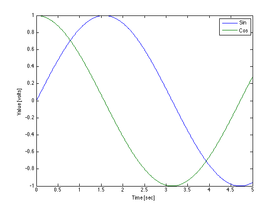
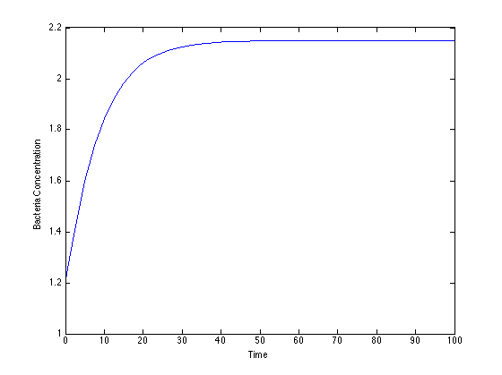
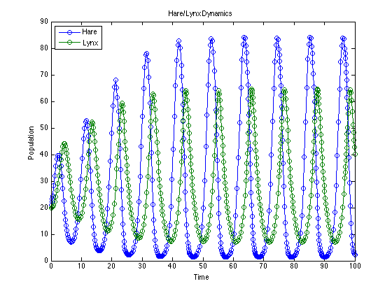
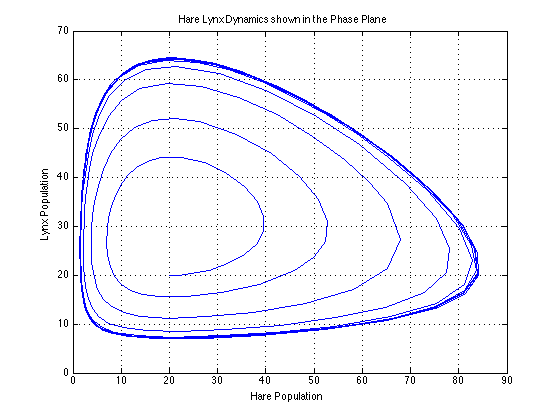
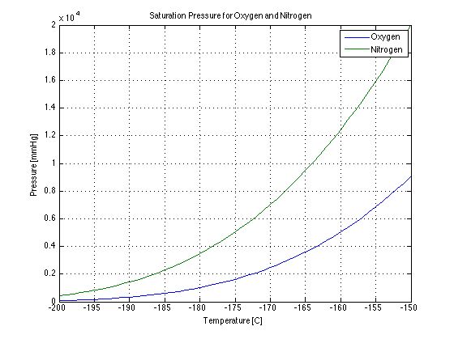
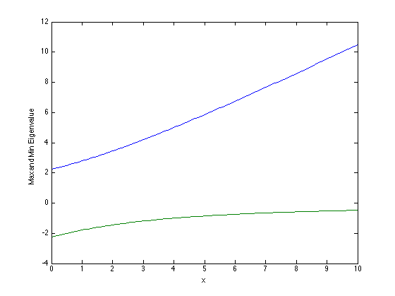
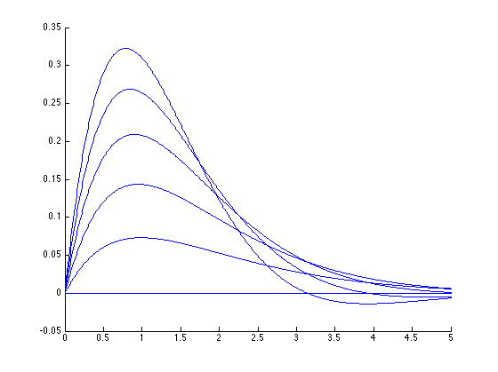
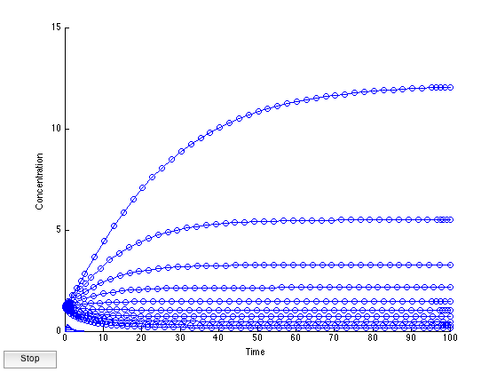

Five Tips for High Productivity with Matlab
Contents
- Introduction
- Five Tips to High Productivity with Matlab
- 1. Use scripts, cells, and publish to organize and present your work.
- 2. Adopt a matrix/vector/array/table mindset.
- 3. Use anonymous functions to work with engineering formulas.
- 4. Make your functions more useful with element-by-element operations.
- 5. Use arrayfun instead of for loops.
Introduction
Are you making the most of Matlab? Do you dread those homework sets that require you to use Matlab? Does Matlab help you get your work done faster, or does it slow you down?
These notes present tips for the productive use of Matlab for routine engineering calculations. The idea is to focus on a few techniques that will help you solve routine homework problems more quickly, more accurately, and make Matlab your 'go to' tool for engineering calculations.
Software Requirements
You will need to download and install some additional Matlab functions to run this file. These include:
- displaytable. Located in the Utilities folder in the Matlab Files section of the course web site. Put this function in a convenient place, then apply 'File>Set Path' using the 'Add with Subfolders' options. Save the path.
Five Tips to High Productivity with Matlab
- Use scripts, cells, and publish to organize and present your work.
- Adopt a Matrix/Vector/Array/Table mindset.
- Use anonymous functions to work with engineering formulas.
- Make your functions more useful with element-by-element operations.
- Use arrayfun instead of for loops whenever possible.
1. Use scripts, cells, and publish to organize and present your work.
Scripts provide a way to develop your Matlab projects in an ordered and systematic manner. Scripts are a permanent record of your work, which you can go back and fix, or reuse elements for other projects.
Some tips:
- Exercise and debug your work as you go.
- Use Matlab's publish function to document and present your work.
- Use cells to separate your work into steps.
%% Problem P5.34 <-- Major Heading, appears in contents
% To begin .... %%
% *The next step* <-- Minor Heading, omitted from contents.2. Adopt a matrix/vector/array/table mindset.
Matlab's great feature is that you can work with entire tables of data at once.
For example, suppose you want to tabulate values of the sin function. Which of the following approaches looks quicker? (by quicker, we mean quicker for you, not for your laptop!)
This
t = 0; dt = 1; for k = 0:5 disp([t, sin(t), cos(t)]); t = t + dt; end
0 0 1
1.0000 0.8415 0.5403
2.0000 0.9093 -0.4161
3.0000 0.1411 -0.9900
4.0000 -0.7568 -0.6536
5.0000 -0.9589 0.2837
or this? (requires displaytable.m)
t = (0:1:5)'; displaytable([t, sin(t), cos(t)]);
0 0 1
1 0.84147 0.5403
2 0.9093 -0.41615
3 0.14112 -0.98999
4 -0.7568 -0.65364
5 -0.95892 0.28366
Some pointers --
- Download displaytable from the course webpage. It is located in the Utilities folder under 'Matlab Files'.
- With the element-by-element .^, Matlab can compute a whole vector of data at time? t is a vector, and the sin function computes a value for each element of t. No need to write a for loop.
- The vector can be organized as a row or as a column. Here we used ' to turn a row vector into a column.
- t(:) is always a column vector.
- Use [,] to assemble columns into an array, or [;] to assemble rows into an array.
It's easy to plot and display vectors and arrays of data. Using vectors, you can plot and add labels
t = 0:.01:5; plot(t,sin(t),t,cos(t)); xlabel('Time [sec]'); ylabel('Value [volts]'); legend({'Sin','Cos'});
Use displaytable to conveniently display tables of data with row and column headers.
addpath('utilities'); t = (0:1:5)'; displaytable([t,sin(t),cos(t)],'',{'t [sec]','Sin(t)','Cos(t)'});
t [sec] Sin(t) Cos(t)
0 0 1
1 0.84147 0.5403
2 0.9093 -0.41615
3 0.14112 -0.98999
4 -0.7568 -0.65364
5 -0.95892 0.28366
3. Use anonymous functions to work with engineering formulas.
Anonymous functions are simple, easy to use, and can be included directly into your scripts without needing additional files. Often they are all you need to work with engineering equations in Matlab.
Example: Normal boiling point of oxygen using Antoine's equation.
% Antoine's Equation: Saturation Pressure [mmHg] vs. Temperature [deg C] PsatO2 = @(T) 10^(6.69144 - 319.013/(T + 266.697)); % Use fzero to solve for boiling point where PsatO2(T) = 760 mmHg Tboil = fzero(@(T)PsatO2(T) - 760, [-200]); % Display result displaytable(Tboil,'Normal boiling point of Oxygen [deg C] = ');
Normal boiling point of Oxygen [deg C] = -182.98
Example: Bubble and dew points using the Rachford-Rice equation
This next example shows how a series of anonymous functions can be combined to build up quite complex expressions.
% Antoine's equations PsatO2 = @(T) 10^(6.69144 - 319.013/(T + 266.697)); PsatN2 = @(T) 10^(6.49457 - 255.68/(T + 266.55)); % K-value functions KO2 = @(T,P) PsatO2(T)/P; KN2 = @(T,P) PsatN2(T)/P; % Rachford-Rice equation RR = @(T,P,phi) 0.2*(KO2(T,P)-1)/(1 + phi*(KO2(T,P)-1)) + ... 0.8*(KN2(T,P)-1)/(1 + phi*(KN2(T,P)-1)); % Solve RR(T,P,phi) = 0 for bubble and dew points at 760 mmHg P = 760; Tbubble = fzero(@(T) RR(T,P,0), -150); Tdew = fzero(@(T) RR(T,P,1), -150); % Display results displaytable([Tbubble;Tdew],{'Bubble Pt. [deg C]','Dew Pt. [deg C]'})
Bubble Pt. [deg C] -194.31 Dew Pt. [deg C] -191.19
Example: Solve a differential equation using ode45
Here's a simple model for the growth of a bacterial culture in a chemostat with Monod kinetics. The example demostrates the use of an anonymous function to model the chemostat, followed by another use of the anonymous function to pass the model to ode45 with the right arguments.
% Model parameters k1 = 0.67; k2 = 1.20; D = 0.2; % Chemostat model f = @(c) -D*c + k1*c/(k2 + c); % Reshape the model to fit the requirements of ode45 tspan = [0 100]; c0 = 1.2; [tout,cout] = ode45(@(t,c)f(c),tspan,c0); % Display the results plot(tout,cout); xlabel('Time'); ylabel('Bacteria Concentration');
Example: Solving a coupled pair of differential equations
A model for the population dynamics of Hare and Lynx is given in the textbook by Astrom and Murry.
% Parameter values a = 3.2; b = 0.6; c = 50; d = 0.56; k = 125; % Carry Capacity for Hares r = 1.6; % Note that parameter values are fixed when the function handles are % specified. fH = @(H,L) r*H*(1-H/k) - a*H*L/(c+H); fL = @(H,L) b*a*H.*L/(c+H) - d*L; f = @(t,x) [fH(x(1),x(2));fL(x(1),x(2))]; % Preditor-Prey systems frequently demonstrate _Limit Cycle_ behavior % identified as a sustained cyclic rep x0 = [20;20]; tspan = [0 100]; ode45(f,tspan,x0); % The following dress the plot up for presentation xlabel('Time'); ylabel('Population'); title('Hare/Lynx Dynamics'); legend('Hare','Lynx','Location','NorthWest');
Phase Plane
The phase plane is the same information plotted in the state-space coordinates.
[t,x] = ode45(f,tspan,x0); plot(x(:,1),x(:,2)); % comet(x(:,1),x(:,2)); xlabel('Hare Population'); ylabel('Lynx Population'); title('Hare Lynx Dynamics shown in the Phase Plane'); grid;
4. Make your functions more useful with element-by-element operations.
The version of PsatO2(T) above will calculate the saturation pressure for one value of T at a time. Often you want to obtain values for many values of T, preferably without having to write for loops.
The trick is use element-by-element versions of the basic Matlab operators *, /, and ^. Normally these are matrix operations. Adding a '.' forms the element-by-element operators .*, ./, and .^. This causes your functions to behave like Matlab's builtin functions such as sin and cos.
Example: Plot the Saturation Pressure of Oxygen and Nitrogen vs. Temp.
PsatO2 = @(T) 10.^(6.69144 - 319.013./(T + 266.697)); PsatN2 = @(T) 10.^(6.49457 - 255.68./(T + 266.55)); T = -200:-150; plot(T,PsatO2(T),T,PsatN2(T)); xlabel('Temperature [C]'); ylabel('Pressure [mmHg]'); title('Saturation Pressure for Oxygen and Nitrogen'); legend({'Oxygen','Nitrogen'}); grid
5. Use arrayfun instead of for loops.
Repetitive calculations are required for many engeineering uses, such as creating plots, data tables, or parametric studies. for loops are traditionally used for this purpose, but they take time to set up and debug.
arrayfun provides a quick way to do simple repetitive calculations in a single line. Save the for loop for more complex situations where it is really necessary.
Example: Compute eigenvalues of a matrix as a function a parameter.
% Matrix as a function of x A = @(x) [ x 2 0; 2 0 1; 0 1 x]; % Range of values x = 0:0.1:10; % Use arrayfun to compute max and min eigenvalues for each value of x emax = arrayfun(@(x)max(eig(A(x))),x); emin = arrayfun(@(x)min(eig(A(x))),x); % Display results plot(x,emax,x,emin); xlabel('x'); ylabel('Max and Min Eigenvalue');
Example: Parametric plotting with arrayfun
% A function of t and a parameter w f = @(t,w) exp(-t).*sin(w*t); % Select a range of values for t, and for parameter w t = 0:.01:5; w = 0:.2:1; % Create multiple plots clf; hold on arrayfun(@(w) plot(t,f(t,w)), w) hold off
Example: Simulate a chemostat as a function of dilution rates
% Model parameters k1 = 0.67; k2 = 1.20; D = 0.2; % Chemostat model as a function of c and D f = @(c,D) -D*c + k1*c/(k2 + c); % Reshape the model to fit the requirements of ode45 tspan = [0 100]; c0 = 1.2; % Setup ode45 to plot c(t) for given value of the dilution rate simulate = @(D) ode45(@(t,c) f(c,D), tspan, c0); % Choose a range of dilution rates D = 0.05:.05:0.5; % Overlay plots for each value of D hold on arrayfun(@(D)simulate(D),D); hold off % Set and label axes axis([0 100 0 15]); xlabel('Time'); ylabel('Concentration');